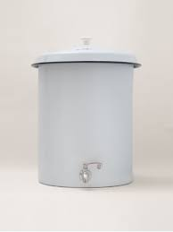

Agua limpia impulsada por energía solar
Ecofiltro Solar es una iniciativa dedicada a proporcionar soluciones sostenibles para la purificación de agua utilizando la energía del sol. Nuestra tecnología permite obtener agua potable de manera eficiente y ecológica, beneficiando a comunidades en todo el mundo.
